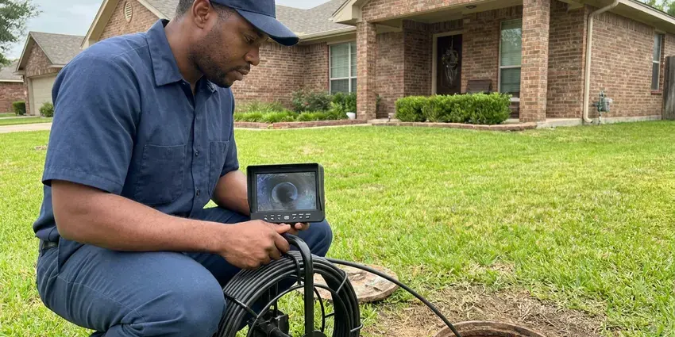

Water Heater Maintenance in Leavenworth, KS
Steady hot water in Leavenworth, KS starts with a clean tank and a working relief valve.
- Work backed in writing
- Quick appointments
- Price Before Work
- No hidden fees

Flush the Sediment and Add Years in Leavenworth, KS
Call KRV Plumbing to book a flush and a full safety check.
Water Heater Maintenance for Leavenworth, KS Homes
KRV Plumbing services gas and electric tank water heaters as well as tankless units. Flushing, anode inspection, relief valve testing and burner or element checks are standard. One visit covers it.
Our expertise includes:
- Anode rod checks
- Relief valve tests
- Full tank flushes to clear hard water sediment

Additional Plumbing Maintenance Services in Leavenworth, KS
Our maintenance and specialty plumbing services in Leavenworth, KS protect your home year-round and extend the life of every system.


Customers
Why Choose KRV Plumbing for Water Heater Maintenance in Leavenworth, KS?
Water heaters rarely fail without warning. Strong winds and dry spells can pull moisture out of the soil, while sudden cold fronts can drop temperatures sharply overnight. Noise, lukewarm water, rusty hot water and a damp pan all show up well before a tank fails. That is the point of a tune-up.
- Fewer Breakdowns, Small problems get caught before they leave you without hot water.
- Warranty Records, Service records help keep manufacturer warranties in effect.
- Lower Energy Bills, A clean tank uses less fuel and costs less every month.
Citywide Coverage
We maintain water heaters throughout Leavenworth, whether the unit is in a garage, a utility closet or an attic. Our techs are equipped for cramped closets and hot attics, with drop cloths, small pumps and the hoses to drain a tank without dragging water across your floors. We protect the house.
Experienced Team
Our plumbers work on every make of water heater. They know how water hardness and temperature swings in this part of the country affect tanks and tankless units, and they adjust the flush schedule and anode choice to match. They know the patterns.
Safety-First Approach
Our techs run real safety tests, not a glance. We check gas connections with leak detector, test for carbon monoxide spillage at the draft hood and operate the relief valve, so you know the heater is safe and up to code. Peace at home matters.
Trusted Certified Leavenworth Plumbing Services Professionals
At KRV Plumbing, we are proud to offer certified plumbing services throughout Leavenworth, KS. Those papers on the wall mean something. Every repair, install and maintenance visit follows strict safety and quality rules, and the plumbers doing the work carry recognized industry credentials.
Call Us Now PHCC Plumbing Contractor Recognition
PHCC Plumbing Contractor Recognition Better Business Bureau (BBB) Accreditation
Better Business Bureau (BBB) Accreditation Angi Certified Pro
Angi Certified Pro ISO 9001 Quality Management Certification
ISO 9001 Quality Management CertificationGas and Electric Water Heater Maintenance in Leavenworth, KS
Descaling Tankless Units in Leavenworth
Error codes often mean scale. Tankless heaters are especially sensitive to hard water, and once scale coats the heat exchanger, flow drops, the unit overheats and the control board shuts it down to protect itself. We descale through the service valves. Yearly descaling is standard advice for hard water.

Tank Flush and Inspection in Leavenworth
Sediment forms from minerals in the water. On a standard tank visit we flush that sediment out, test the temperature and pressure relief valve, check the anode for corrosion and inspect every fitting for leaks, which protects one of the more expensive appliances in the house. Efficiency comes back. Recovery speeds up.
Tank Water Heater Maintenance in Leavenworth
Flushing is the heart of tank maintenance. Many Kansas homeowners use water softeners to protect their tank water heaters and fixtures against heavy mineral buildup. We run a hose from the drain valve, open it up and let the tank drain until the water runs clear, then refill and check the anode rod, the relief valve and every connection for drips or corrosion. Plan on an hour. A clean tank heats faster and lasts longer.
Electric Water Heater Tune-Up in Leavenworth
Electric tanks fail at the lower element. Sediment buries the lower element until it overheats and fails, leaving you with a short supply of hot water. We test both elements. Thermostats and wiring get checked with the power off.
Maintenance for Every Brand in Leavenworth
Rheem, AO Smith, Bradford White, Noritz, Rinnai and more. Each brand has its own anode type, drain valve style and descaling procedure, and we follow the manufacturer's guidelines so the service holds up if you ever need to file a warranty claim. Every brand differs a bit. We bring the right parts.
Commercial Water Heater Service in Leavenworth
Businesses cannot run without hot water. Restaurants, salons and gyms in Leavenworth can lose a whole day of business when one commercial heater fails. Off-peak visits are available. Larger units get the same flush, anode and safety checks.
Thermostat, Element and Burner Checks in Leavenworth
Wrong temperature means a part is off. On electric units we test the thermostats and elements for proper resistance and accurate shutoff, and on gas units we inspect the burner, the pilot or igniter and the gas control valve. Strong winds and dry spells can draw moisture out of the soil, while sudden cold fronts can drop temperatures sharply overnight. Faulty parts waste energy. They also cut your hot water short.

Yearly Service Plans in Leavenworth, KS
Forgetting is the main reason tanks go unflushed. Plans schedule the visit, send reminders and add priority booking and repair discounts. We track it for you. Long-term savings add up.
Water Heater Service Near You in Leavenworth, KS
Searching for water heater maintenance near you in Leavenworth, KS? KRV Plumbing has techs out every day. That usually means a tune-up can be booked within the week, and if the heater is already acting up, a same-day visit is often possible. Close is faster.
Being nearby means fast booking and yearly reminders. We keep notes on your unit's model, age and service history, which helps us spot changes from year to year and plan ahead for a replacement before the tank fails on its own schedule. You see it coming.
KRV Plumbing at a Glance
- Licensed and insured plumbers serving Leavenworth, KS
- Same-day appointments and 24/7 emergency response
- Upfront, flat-rate pricing before work begins
- 4.9-star rated by 910+ Kansas customers
Leavenworth Map
Leavenworth Information
- Population
- 37,034
- Area codes
- Local
- Service area
- Leavenworth and communities within 40 miles
- Nearby
- Kansas City, Shawnee, Lenexa, Prairie Village
Minerals in the water settle on the tank bottom in Leavenworth, KS homes and waste fuel a little more every month. Many Kansas homeowners use water softeners to protect their tank water heaters and fixtures against heavy mineral buildup.
Talk to a Plumber
Call KRV Plumbing for reliable plumbing work done by licensed pros in Leavenworth, KS.
Our Specialized Plumbing Services in Leavenworth, KS
At KRV Plumbing, we handle the full list of plumbing services across Leavenworth, KS. From leak detection to full system installs, our team works fast and charges fair prices on homes and commercial properties alike. Here are the core services we offer:


Our Water Heater Service Steps in Leavenworth, KS
Here is how a water heater tune-up runs at your Leavenworth, KS home, from shutoff to restart.
Call for a Price
Call (316) 229-8459 with your heater's type, age and spot in the house. We give you a price and a time.
Inspect and Flush
Safety checks come first, then flushing. Worn anodes get noted or replaced.
Test and Report
We restore power or gas and check the temperature. You get a written summary.
Frequently Asked Questions About Water Heater Maintenance in Leavenworth
A standard tank flush and inspection in Leavenworth usually costs $100 to $250. Descaling runs $150 to $300, and a new anode adds $75 to $200.
It corrodes so the steel tank does not. Once the rod is spent, the tank starts rusting, so replacing it extends tank life. Water chemistry affects how fast.
Popping noises, lukewarm water, rusty or smelly hot water and slow recovery. Each one means book a visit.
Sediment is calcium and magnesium that settles on the bottom of the tank. Many Kansas homeowners use water softeners to protect their tank water heaters and fixtures against heavy mineral buildup. It wastes energy, makes noise and can cause the tank to fail early. Flushing removes it.
It will. Flushing sediment and keeping a healthy anode rod in the tank slow corrosion and wear on the internal parts, which saves you from paying for a replacement years too early. It pays for itself.
Most tank flushes and inspections take 45 to 90 minutes. Tankless descaling usually takes one to two hours.
Yearly with hard water. Homes without a softener may need it twice a year.
Partly. Anode, valve and element checks need tools, and errors can void a warranty. Gas work needs a pro.
What Our Customers Say About Our Plumbing Experts

Monica A.
Our water bill nearly doubled in one month with no change in how we used water. The tech checked the meter, heard the leak under the hallway with his equipment, and opened a hole about a foot square. Fixed the same day.
Slab Leak Repair · Lenexa, KSLaura S.
Our 40 gallon tank started leaking from the bottom after thirteen years. The tech hauled the old one out, set a new unit with a fresh expansion tank, and had hot water running in about four hours. He took the old tank with him too.
Water Heater Replacement · Prairie Village, KS
Brian W.
I smelled gas behind the dryer and called right away. The plumber found a corroded flex connector, replaced it, and pressure tested the whole line before turning the gas back on. He let me watch the gauge hold steady for fifteen minutes.
Gas Line Repair · Kansas City, KS
Marcus H.
Grease from the fryer line kept clogging the kitchen drain at my diner. KRV Plumbing hydro jetted the line after closing, showed me the buildup on camera, and set us up on a quarterly cleaning so it does not catch us on a Friday again.
Drain Cleaning · Shawnee, KS
Daniel K.
A pipe burst in the garage ceiling at 11 at night. Someone answered on the second ring, and the plumber was in my driveway about fifty minutes later. He shut off the main, cut out the split section, and had water back on before 2 am.
Emergency Plumbing · Lawrence, KS
Diane F.
My kitchen faucet had dripped for months and I finally got tired of hearing it at night. KRV Plumbing came out the next morning, replaced the cartridge and the O rings, and tightened a loose base that was letting water under the sink.
Faucet Repair · Lenexa, KS